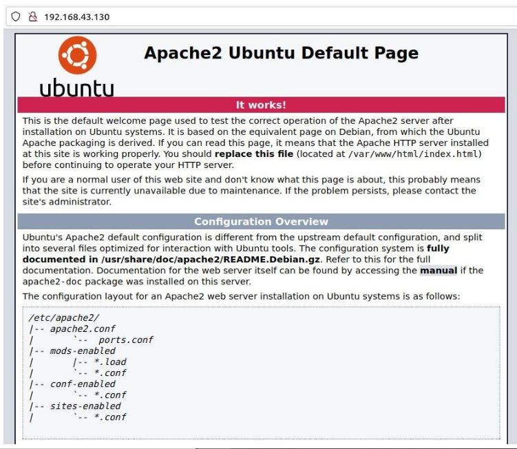
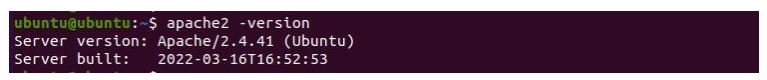

How to Set Up an Apache Web Server on Linux
STEP 1: Install Apache Server on Linux
Before beginning with the Apache installation, you must update the Linux package database from the official repositories. It is a necessary step that helps avoid any security loopholes and includes the latest features to the packages
Update the system repository list and install Apache using the following commands:
1. sudo apt-get update
2. sudo apt-get install apache -y
STEP 2: Verify Apache Service Status
On Debian/Ubuntu-based distributions, the Apache service starts automatically. You can go to the browser and enter your local IP address to access the server's landing page. If you are unsure about your server's address, run the hostname -i command to print the details.
command:
hostname -i
Output:
192.168.43.130
The page confirms successful installation.
command:
http://"local_server_IPadd>"

to verify the installation: run the following command
apache2 -version
